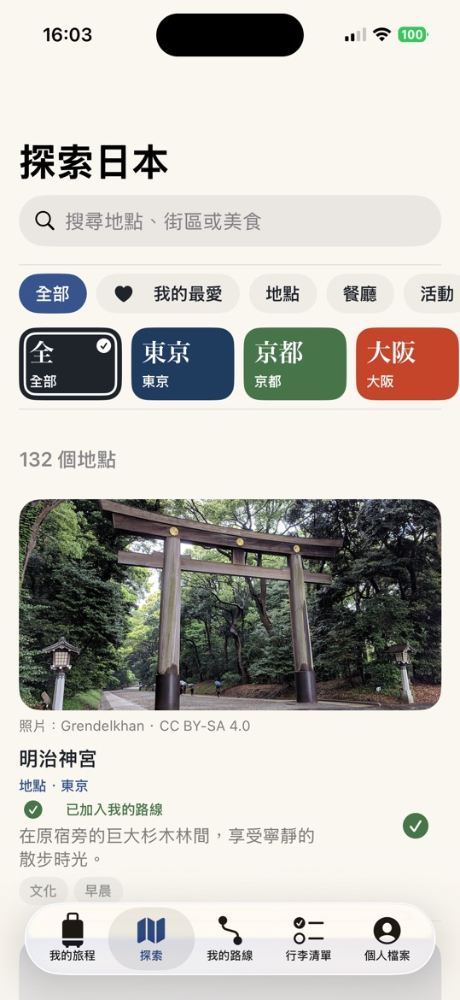
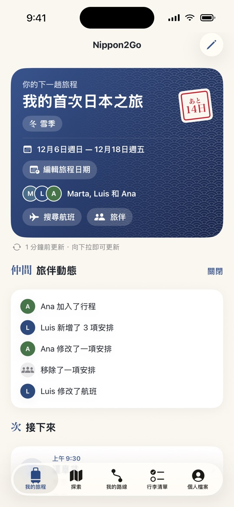
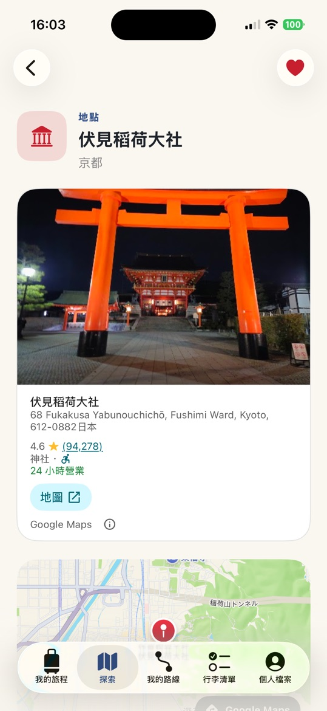
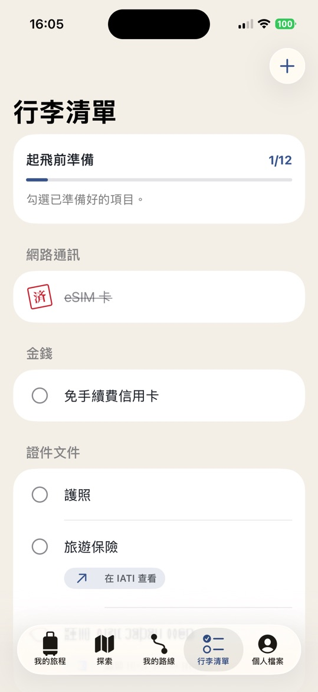
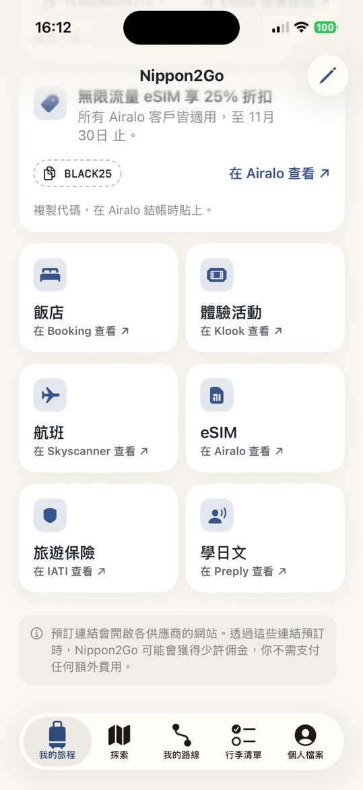
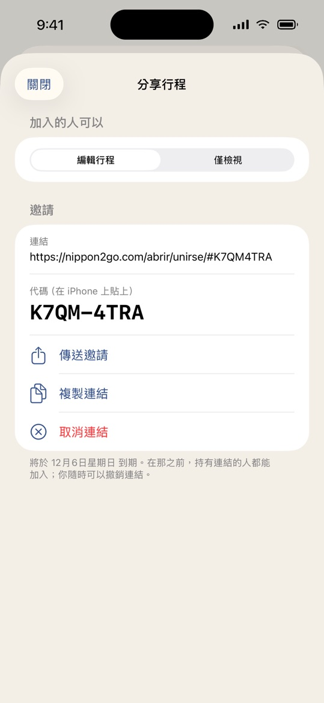

探索
125 個以上的精選地點
東京、京都、大阪、奈良、鎌倉、橫濱和廣島的寺院、觀景台、街區、餐廳、飯店和體驗，附有照片，還能依類型和城市篩選。

找出最值得去的地方，排成每天都走得完的路線，從護照到 JR Pass 都準備妥當，安心抵達日本。
免費 · iPhone（iOS 17 以上）· Android

從最初的念頭，到在日本的最後一天。
探索
東京、京都、大阪、奈良、鎌倉、橫濱和廣島的寺院、觀景台、街區、餐廳、飯店和體驗，附有照片，還能依類型和城市篩選。

我的路線
把地點加入路線，Nippon2Go 就會在每個城市把相近的地點排進同一天，並標出時間、距離，以及該走路還是搭電車。

地點
Google 評分、營業時間和地址，加上 Apple 地圖，以及 Google 地圖的路線指引。需要門票的景點可以直接連到購票頁面。

行李清單
護照、旅遊保險、eSIM、插頭轉接器、JR Pass……還有你自己加的項目，每打勾一項，就蓋上一個「済」字印章。

預訂
在 Booking.com 訂飯店，城市和日期都已幫你填好；在 Klook 訂活動和門票、向 Airalo 買日本 eSIM、在 Skyscanner 找機票、向 IATI 買旅遊保險，還能在 Preply 跟家教老師上日文課。

共享行程
用連結或代碼邀請同行的旅伴：每個人都能在自己的手機上查看和修改同一個行程，iPhone 和 Android 都可以。你會知道誰新增了哪個行程、改了什麼，而收藏、我的路線和行李清單則各自保留。只有分享時才需要帳號。

每天都有可以編輯的行程表，還能以日本時間加入手機行事曆。
規劃旅程不需要帳號：旅程存在你的手機上，只有分享或備份時才需要登入。提供 7 種語言。
最常見問題的快速解答。
不需要。不登入也能規劃整趟旅程。只有分享旅程或備份副本時才需要帳號：在個人檔案使用 Apple 或 Google 登入（Android 使用 Google）。
存在你的手機上。登入後，可在個人檔案把副本備份到你的帳號：副本會存到雲端，也就是我們位於歐盟的伺服器，不含照片和設定。在另一支手機（iPhone 或 Android）用同一個帳號登入，再還原你的備份即可。副本不會自動更新：修改旅程後請再儲存一次。如果沒有副本就刪除 App，旅程也會一起刪除。
可以。在我的旅程打開旅伴，點邀請並登入。選擇加入的人可以編輯行程還是僅檢視，再傳送連結或代碼；iPhone 和 Android 都能使用。每個人的修改都會同步給其他人。
你的旅程、路線和行李清單都存在手機上。地圖、地點照片、Google 地點資訊和預訂連結則需要網路連線。
在探索中打開一個地點，點加入我的路線。在我的路線中，Nippon2Go 會依城市和距離將你的地點分組，並根據你在所有城市的旅行步調選擇的步調（輕鬆、適中或緊湊）分配到每一天。你可以調整停留時間，再把路線加入你的行程。時間和距離都是估計值，出發前請先確認營業時間和交通方式。
在我的旅程中點將行程加入行事曆，檢查活動內容後確認即可。第一次使用時，請允許存取行事曆。行程會以日本時間加入。
Nippon2Go 會打開 Booking.com，並幫你填好城市和日期；也提供連結，讓你到 Klook 訂活動和門票、到 Airalo 買日本 eSIM、到 Skyscanner 找機票、到 IATI 買旅遊保險，以及到 Preply 上日文課。預訂是直接向這些業者進行，並適用他們的條款和隱私權政策。
前往個人檔案 → App 語言。你可以選擇 English、Español、Français、Deutsch、Italiano、한국어 或繁體中文，變更會立即套用。
要登出，請前往個人檔案 → 帳號 → 登出，你的旅程會留在手機上。要刪除帳號，請在個人檔案點刪除帳號並確認：我們伺服器上的資料（你的備份和在群組中顯示的名字）會被刪除，你也會退出共用的旅程；旅伴的旅程仍屬於他們。你的旅程會保留在手機上。也可以不開啟 App，直接在 nippon2go.com/zh-hant/delete-account/ 刪除。
Nippon2Go 陪著旅客從挑選日本的地點，一路走到完成預訂。業者的連結就出現在旅客需要的地方，而 Booking.com 的飯店、Skyscanner 的機票、Airalo 的日本 eSIM 和 Klook 的活動，都已經透過各自的聯盟行銷計畫串接。
「我的路線」中的每個城市，都會以 App 的語言打開 Booking.com，並帶入該城市的入住和退房日期以及旅客人數，這些資料取自旅程，或依路線估算。「我的旅程」和「個人檔案」會打開旅程主要城市在旅程日期內的飯店，「探索」中的每家飯店則會打開所在城市的飯店。
需要門票的地點會打開它在 Klook 上的專屬門票頁面，其他活動會連到所在城市的 Klook 活動，「我的旅程」也有 Klook 活動的連結。
「預訂」區塊和行李清單都有機票（Skyscanner）、日本 eSIM（Airalo）、旅遊保險（IATI）和日文課程（Preply）的連結。行李清單還會連到 JR Pass（Klook），以及日本官方的入境手續網站 Visit Japan Web。
支援 iPhone 和 Android，提供英文、西班牙文、法文、德文、義大利文、韓文和繁體中文。
有興趣和 Nippon2Go 合作嗎？歡迎寫信到 carlos@nippon2go.com。
有疑問、發現錯誤，或想推薦新地點嗎？歡迎寫信到 carlos@nippon2go.com 與我們聯絡。